Free
computer Tutorials
|
Free
computer Tutorials
|
|
 home home |
|
|||||
Microsoft Word 2007 to 2010Setting up Headers and FootersHeaders and footers are pieces of text or graphics that appear at the top and bottom of a page. After you set up a header and footer, they will appear on all of your pages. You can add a page number to a header or footer, and Microsoft Word will automatically insert the right page number for you.
To set up a header and footer for your document, click on the Insert tab at the top of Word. Now locate the Header & Footer panel: 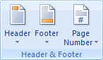 Click on the Header item and you'll see a drop down list appear: 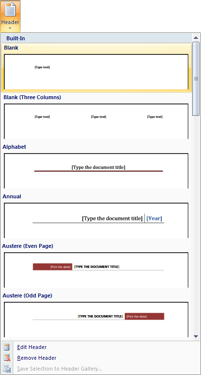 The items on the list are Headers that are built in to Microsoft Word. There are some nice Headers on the list, but we'll do our own so that you can see how they work. Select the first item on the list, Blank. The top of your page will then look like this: 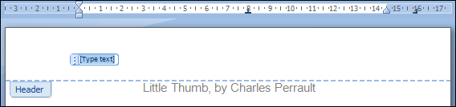 Notice, too, that a new tab has appeared - the Design tab. The panels on the tab are: Header & Footer, Insert, Navigation, Options, Position, and Close. The thin, dashed blue line is the bottom of your header, and everything above is the area where you can type your header text (or insert images). There is already a selected area with the words "Type text" in it. However, this is the first page in the story. We don't want any header on the first page, as it doesn't look very good. We want the headers to start on page two. So have a look at the Design tab, and locate the Options panel. Left click inside the check box next to Different First Page: 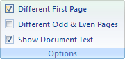 Now locate the Navigation panel, and click the Next Section button (In Word 2010, it's just Next): 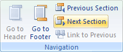 The header text on page 2 will now be selected. Go ahead and type the title of the story again, Little Thumb. Just like text anywhere, you can select your header text and format it to your liking. So choose a font and font size, and then centre it. For the font and the centring, you'll need to click back on the Home ribbon. The Design ribbon will stay open, though. (You might accidentally click outside of the header, and lose the Design tab. To get it back, double click anywhere inside of the Header area.) Click back on the Design tab when you're done. Your header will then look like this: 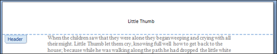 One last thing we'll do here is to add a line in the Header, underneath the title. To do that, click on the Insert tab. From the Insert tab, locate the Illustrations panel. On the Illustrations panel click the Shapes item, and then select the straight line, as in the image below: 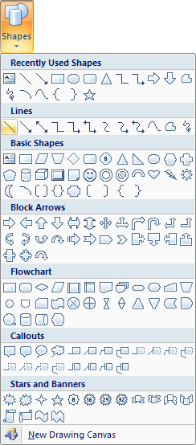 With the line shape selected, click on your Design tab to get back to your Header area. Now hold down your left mouse on the left edge of the header, just in line with the left edge of the story. Keep your left mouse button held down and drag to the right edge of the header. Release your mouse button when you get to the right edge of the story. You will then have a line that looks like ours below: 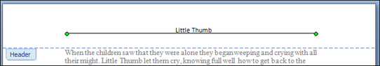 In Word 2010, if your line is not solid black, click on the Format tab. Locate the Shape Styles panel, and click the first line: Notice the two round circles at either end of your line. This indicates that the line is selected. If your line is not big enough, or it's too big, hold your left mouse button down on one of the circles. Your mouse pointer will change to the shape of cross. Keep your left mouse button help down and drag either to the left to make your line shorter, or to the right to make it bigger. If your line is not straight, move your mouse up or down while holding down the left mouse button. To move the whole line up or down, hold your left mouse button down anywhere on the line except for the two green circles on the end. Keep your left mouse button down and drag your line up or down. Place it just under the title. Another way to move the whole line is with the arrow keys on your keyboard, in combination with the CTRL key. Hold down the CTRL key. Keep it held down and tap one of your arrow keys. You can move the line up, down, left, and right using this method. When you're done, though, your header should look like from above:
FootersMicrosoft Word allows you to insert page numbers into your document. This is done (usually) in the Footer area of the page. The Footer is just the opposite of the Header. You can do the same things with the Footer as you can with the Header. We'll see how to insert page numbers into the Footer. Make sure the Design tab is select at the top of Word. Now locate the Navigation panel again. Click the item that says "Go to Footer": 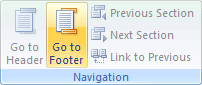 Word will then jump to the bottom of the page, and your cursor will be flashing in the Footer area. Because you checked "Different First Page", your cursor should be on page 2 of your story. To insert page numbers, locate the Header & Footer panel on your Design tab. Click the Page Number item to reveal a drop down list. From the Page Number menu, select "Bottom of page", as in the image below: 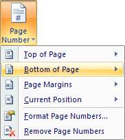 When you select "Bottom of page" you should see some options appear: 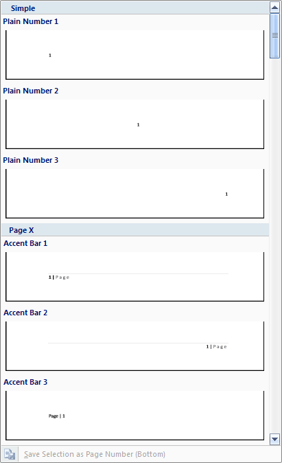 These are built-in page number formatting. Scroll down and find one that you like. Then click it with your left mouse button. We've gone with Square 2: 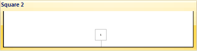 And here's what our footer looks like on the page: 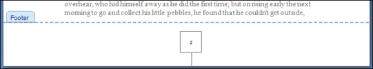 Once you're happy with your headers and footers, you can close the Design tab. To do that, click the Close button: 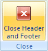
In the next lesson, you'll learn about Print Preview in Word 2007 and Word 2010. <--Back to the Word Contents Page View all our Home Study Computer Courses
|
||||||
|